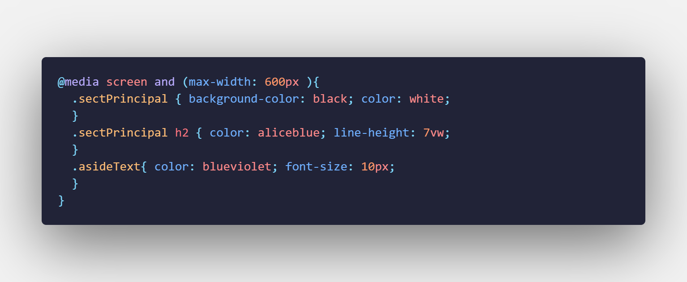
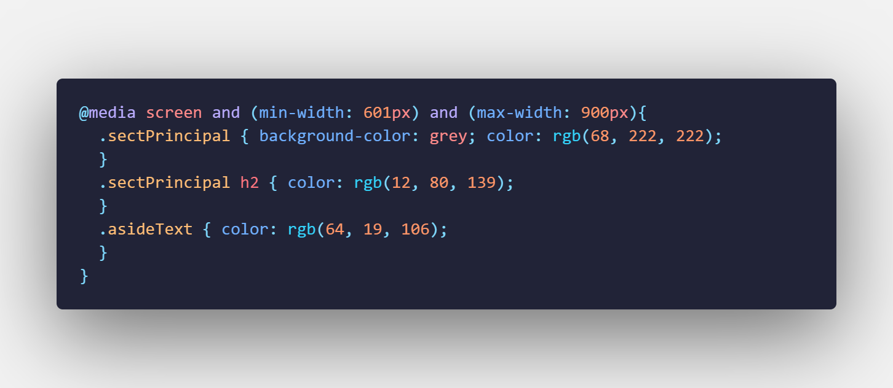

Guia prototipos
Solucion guia maquetacion prototipos
Las media queries son útiles cuando deseas modificar tu página web o aplicación en función del tipo de dispositivo (como una impresora o una pantalla) o de características y parámetros específicos (como la resolución de la pantalla o el ancho del viewport del navegador).
Las media queries consisten de un tipo de medio opcional y una o más expresiones de características de medios. Varias consultas se pueden combinar utilizando operadores lógicos. No distinguen entre mayúsculas y minúsculas.
Los Media Types describen la categoría general de un dispositivo. Excepto cuando se utilizan los operadores lógicos not o only, el tipo de medio es opcional y será interpretada como all.
Apto para todos los dispositivos
Destinado a material impreso y visualización de documentos en una pantalla en el modo de vista previa de impresión.
Destinado principalmente a las pantallas.
Destinado a sintetizadores de voz.
Se pueden redactar queries utilizando operadores lógicos, incluyendo not, and, y only.
Además se puede combinar múltiples queries en una lista separada por comas múltiples; si cualquiera de las queries en la lista es verdadera, la hoja de estilo asociada es aplicada. Esto es equivalente a una operación lógica "or".
El operador and es usado para colocar juntas múltiples funciones multimedia.
Si usted quiere utilizar mas de una media queri puede utilizar el operador logico and en medio de las dos media queries de la siguiente forma:
@media (min-width: 700px) and (orientation: landscape) { ... }La anterior query solo retornara verdadero si la ventana tiene un ancho de 700px o mas y la pantalla esta en formato horizontal.
Las listas separadas por comas se comportan como el operador or cuando es usado en media queries. Cuando utilice una lista separada por comas y alguno de los queries retorna verdadero, el estilo o la hoja de estilos sera aplicada. Cada query en una lista separada por comas es tratado como una query individual y cualquier operador aplicado a un medio no afectara a los demás. Esto significa que cada query en una lista separada por comas puede tener como objetivo diferentes medios, tipos y estados.
Un ejemplo de esto es:
@media (min-width: 700px), handheld and (orientation: landscape) { ... }En este ejemplo se aplicarian estilos a un dispositivo con un ancho minimo de 700px o si el dispositivo esta colocado de forma horizontal
El operador not aplica a todo el query.Un not negara un query si es posible pero no a todos los query posibles si están ubicados en una lista separada por comas. El operador not no puede ser usado para negar un query individual, solo para un query completo.
@media not (all and (monochrome)) { ... }El operador only previene que navegadores antiguos que no soportan queries con funciones apliquen los estilos asignados.
La mayoría de las funciones multimedia pueden ser precedidas por "min-" o "max-" para expresar "greater or equal to" o "less than or equal to". Esto elimina la necesidad de usar los símbolos "<" y ">" los cuales podrían causar conflictos con HTML y XML.
Indica el numero de bits por componente de color del dispositivo de salida. Si el dispositivo no soporta colores, este valor es 0.
Ejemplo:Para aplicar una hoja de estilo a todos los dispositivos que soporten colores:
@media all and (color) { ... }Indica el numero de entradas en la tabla de colores para el dispositivo de salida.
Ejemplo:Para indicar que una hoja de estilo debe aplicarse a todos los dispositivos utilizando índices de color, usted puede hacer esto:
@media all and (color-index) { ... }Describe el aspecto de una zona a mostrar en el dispositivo de salida. Este valor consiste en enteros positivos separados por una barra ("/"). Esto representa la razón de aspecto de los pixeles horizontales (primer termino) a los pixeles verticales (segundo termino).
Ejemplo:Lo siguiente selecciona una hoja de estilo especial para ser aplicada donde la proporción del tamaño de la pantalla del dispositivo de salida es al menos la misma de ancho que de alto.
@media screen and (min-aspect-ratio: 1/1) { ... }Describe la proporción de aspecto del dispositivo de salida. Este valor consiste de dos enteros positivos separados por una barra ("/"). Este representa la proporción de aspecto de los pixeles horizontales (primer termino) a los pixeles verticales (segundo termino).
Ejemplo:El siguiente código selecciona una hoja de estilo especial para ser aplicada en pantallas panorámicas ("widescreen").
@media screen and (device-aspect-ratio: 16/9), screen and (device-aspect-ratio: 16/10) { ... }Describe la altura del dispositivo de salida (ya sea la totalidad de la pantalla o página y no el área del documento a renderizar).
Describe la anchura del dispositivo de salida (ya sea la totalidad de la pantalla o página y no el área del documento a renderizar).
Ejemplo:Para aplicar una hoja de estilo a un documento cuando este sea mostrado en una pantalla de menos de 800px de ancho, usted puede usar esto:
Determina cuando el dispositivo de salida es un dispositivo de cuadrícula o de mapa de bits. Si el dispositivo esta basado en una cuadrícula (como una terminal TTY o una pantalla de teléfono de solo texto), el valor sera 1, de lo contrario sera 0.
Ejemplo:Para aplicar una hoja de estilo a un dispositivo portátil con una pantalla de 15 caracteres o mas estrecha:
@media handheld and (grid) and (max-width: 15em) { ... }La función height describe la altura de la superficie a renderizar en el dispositivo de salida (como la altura de una ventana o la bandeja de papel en una impresora).
Indica el número de bits por pixel en un dispositivo monocromático (escala de grises). Si el dispositivo no es monocromático el valor sera 0.
Ejemplo:Para aplicar una hoja de estilo a todos los dispositivos monocromáticos:
@media all and (monochrome) { ... }Indica cuando el dispositivo esta en modo landscape (el ancho de la pantalla es mayor al alto) o modo portrait (el alto de la pantalla es mayor al ancho).
Ejemplo:Para aplicar una hoja de estilo solo en orientación vertical (portrait):
@media all and (orientation: portrait) { ... }Indica la resolución (densidad de pixeles) del dispositivo de salida. La resolución puede ser especificada en puntos por pulgada (dpi) o en puntos por centímetros (dpcm).
Ejemplo:Para aplicar una hoja de estilo a dispositivos con al menos 300 dpi de resolución:
@media print and (min-resolution: 300dpi) { ... }Describe el proceso de exploración de televisión de los dispositivos de salida.
Ejemplo:Para aplicar una hoja de estilo solo a televisores de exploración progresiva:
@media tv and (scan: progressive) { ... }La función width describe el ancho de la superficie a renderizar en el dispositivo de salida (como el ancho de una ventana de un documento o el ancho de la bandeja de papel en una impresora).
Ejemplo:Si usted quiere especificar una hoja de estilo para dispositivos portátiles o pantallas con un ancho de al menos 20em, usted puede usar esta query:
@media handheld and (min-width: 20em), screen and (min-width: 20em) { ... }Ejemplo 1: En el siguiente ejemplo se crea un media querie que se aplica a esta pagina solo a las pantallas que tengan un maximo de ancho de 600px
En este ejemplo cuando la pantalla no supera un ancho maximo de 600px se le aplica:
Un fondo negro y un color de letra blanco a la section principal.Ejemplo 2: En el siguiente ejemplo se crea un media querie que se aplica a esta pagina solo a las pantallas que tengan un maximo de ancho de 900px y un minimo de ancho de 601px
En este ejemplo cuando la pantalla no supera un ancho maximo de 600px se le aplica:
Un fondo gris y un color de letra rgb(68, 222, 222) a la section principal.
Un color de letra rgb(12, 80, 139) a los h2 de la section principal
Un color de letra rgb(64, 19, 106)
Solucion guia maquetacion prototipos
Solucion guia maquetacion prototipos
Solucion guia maquetacion prototipos